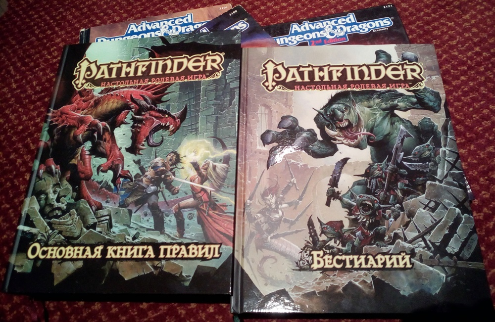

плавали анкеги
на кривом ковчеге
а за ним булей
в лодке потесней
и за ним варгвил
вслед засеменил
ну а там мерфолки,
зиллы, зорны, волки,
где-то в третьем круге
морлок на отьюге,
фиолетовый сморчок,
ржавильщик и осьминог,
многоротый бормотун,
ремораз, тараск-шатун,
древень на шогготе,
гнолл на лягумоте,
злобный куролиск, урча,
обогнал медвесыча,
а на том медвесыче
ехал ловчий в епанче
а за ним козявки
в несусветной давке
едут и смеются,
пряники жуют,
перевод монстрятника —
тяжкий, тяжкий труд.
изначально на G+